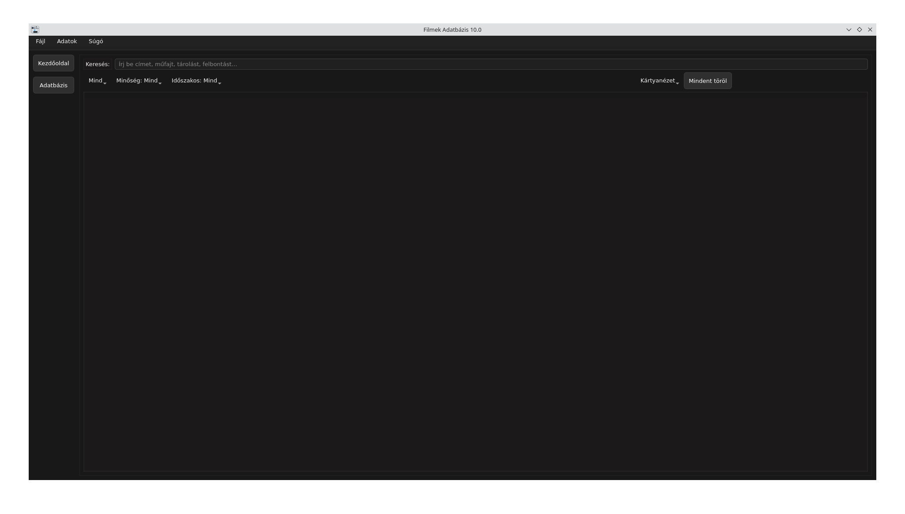
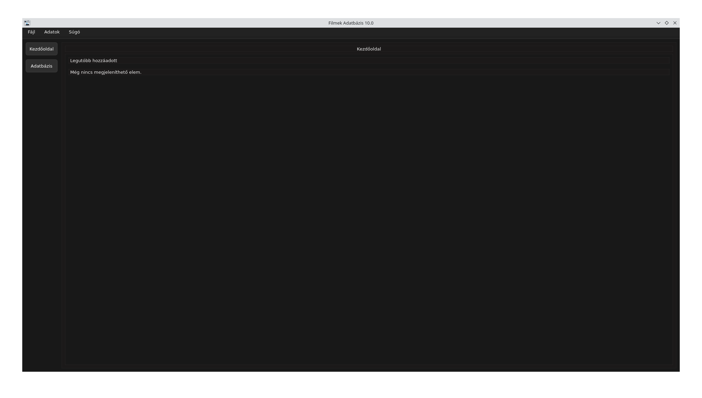

Offline film- és sorozatadatbázis borítóképekkel, kártyás és listás nézettel, részletes adatlapokkal és helyi adatkezeléssel.
Filmek Adatbázis
Mi ez?
A Filmek Adatbázis egy helyi, offline film- és sorozatnyilvántartó alkalmazás. Kártyás vagy listás nézetben böngészheted a gyűjteményedet, minden tételhez saját adatlap tartozik borítóképpel és részletes adatokkal.
Nincs szükség internetkapcsolatra vagy külső fiókra — minden adat helyben, a saját gépeden tárolódik.
Képernyőképek



Telepítés
Dokumentáció
Használati útmutató és gyakran ismételt kérdések a közös dokumentáció oldalon érhetők el. Fejlesztői/technikai dokumentáció később kerül fel.
Dokumentáció megnyitása »